Future Research Objects
Objective 1: Particle Separations and Bacteria Filtrations by Macroporous Membranes
Membrane filters are wildly utilized in a large variety of separation applications, such as water treatment, pollution removal, filtration of aqueous solutions, removal of bacteria and debris, filtration of organic solutions, and so on. Filters with nanometer-scale pore size and tight size control, are very useful in biological. I have demonstrated the separation efficiency of the template macoporous membrane filters by separating 20 nm gold nanoparticles from 330 nm silica particles as shown in Figure 4. This very rough proof-of concept demonstration shows that almost all large silica particles has been filtered out and the collection efficiency of gold nanoparticles is higher than 85 %.
Besides particle separations, I also already demonstrate the template macroporous membrane can be applied to filtrate bacteria (Escherichia coli-ampicillin) in water-based solutions, which potentially can be used in waste water treatment industry. Recently, macroporous membranes with different hydrophobicities are successfully prepared, which indicates another possible application in oil/ water separation. A systematic investigation of membrane structure-oil/water separation property relationships, such as pore size, membrane thickness, membrane materials, and surface energy, will be studied. The ability to separate different oil phases and different oil/water ratio mixtures will also be investigated in this research.
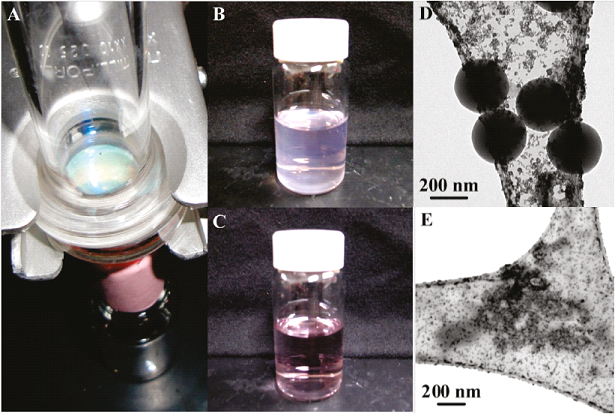
Figure 4. Separation of 10 nm gold nanoparticles from 330 nm silica spheres by using a free-standing, macroporous ETPTA membrane filter. (A) Experimental setup. (B) Photograph of the gold nanoparticle/silica sphere solution prior to filtration. (C) Photograph of the solution after filtration. (D) TEM image of the solution in B. (E) TEM image of the solution in C.
Objective 2: Self-Cleaning Superhydrophobic Macroporous Films
This objective focuses on using doctor blade coating technology prepared macroporous polymer membrane to develop superhydrophoic surfaces. Inspired by lotus leave surfaces, a lot of techniques have been developed to create superhydrophobic surfaces. The aim of the scientists is to create a coating with a surface morphology and low surface energy that mimics the morphology of lotus leaves. However, to the best of our knowledge, simple, inexpensive, and scalable coatings demonstrating the superhydrophobic, water-repellant, and self-cleaning property have not yet been created.
Here we report a scalable bottom-up technology for creating three-dimensionally highly ordered macroporous polymer films with excellent water-repelling and optical diffractive properties. A doctor blade coating process is first utilized to create silica colloidal crystal-polymer nanocomposites. The close-packed silica spheres are selectively removed to fabricate flexible macroporous polymer films with crystalline arrays of voids which are interconnected through small nanopores. The size of the voids can be easily controlled by tuning the duration of an oxygen reactive-ion etching process prior to the removal of the templating silica spheres. As shown in Figure 5, after surface functionalization with fluorosilane, superhydrophobic surface with large apparent water contact angle and small sliding angle can be obtained. We further demonstrate that self-cleaning functionality can be achieved on superhydrophobic macroporous coatings by preventing bacterial contamination. The high crystalline quality of the macroporous polymers also enables strong optical diffraction from the periodic lattice. The optical properties are evaluated by normal-incidence reflectance measurements and theoretical calculation using a scalar-wave approximation model. A good agreement between theory and experiment has been obtained. The simultaneous achievement of controlled dewetting and strong optical diffraction by templated porous films could open new applications in self-cleaning diffractive optics.
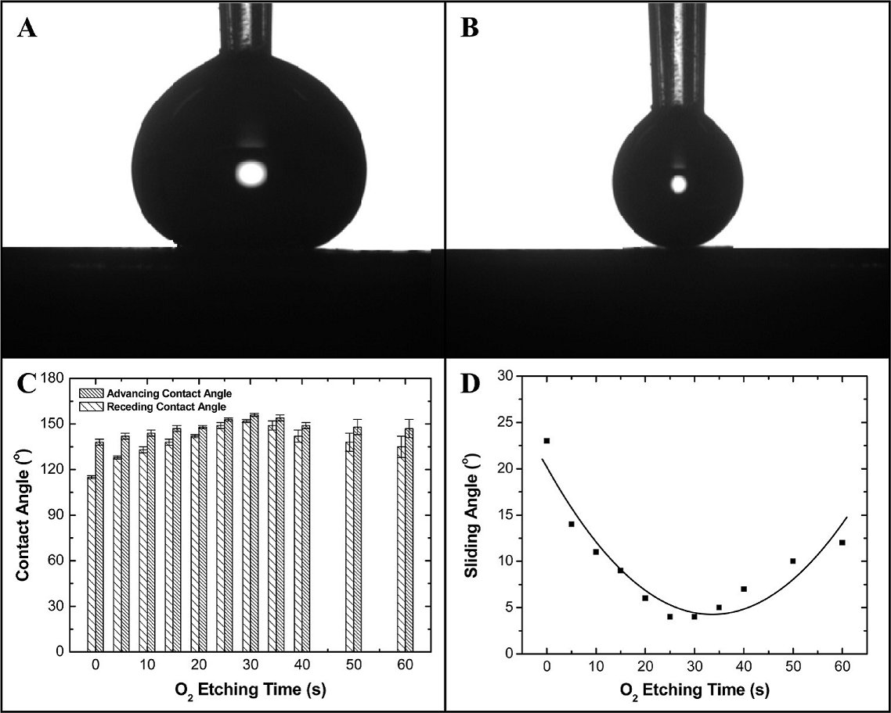
Figure 5. (A, B) Water drop profiles used to determine the advancing and receding water contact angles on a fluorosilane-modified macroporous ETPTA film after 30 s oxygen RIE. (C) Advancing and receding water contact angles of fluorosilane-modified macroporous ETPTA film etched at different RIE durations. (D) Sliding angles of fluorosilane-modified macroporous ETPTA film etched at different RIE durations.
Objective 3: Macrorporous Polymer Reflective Color Displays
There is a big market for the low-end color displays, such as those widely used in supermarkets, signs, roadside advertisement etc. I was approached by companies like Walmart and Hewlett-Packard to express interests in low-cost color displays. These displays are not competing with high-end products, such as flat-panel displays. They do not need very fast response time and the resolution requirement is also relatively low. However, they need to be fabricated in very large area (meters-scale) and in a low cost. Some approaches have been explored to developed next-generation low-end color displays. Unfortunately, the low-cost fabrication over large areas is questionable.
Here I disclose a new methodology in creating reflective color displays by using macroporous polymers which can be created by a simple, inexpensive, and roll-to-roll compatible fabrication technology. The template macroporous membranes can be used for optical applications, such as optical filters. The Bragg diffraction of visible light from 3-D highly ordered void arrays as shown in Figure 3 is the reason for iridescent colors of macroporous membranes. Figure 6A shows a green-color macroporous polymer sample. When the air cavities are filled with ethanol (refractive index of ethanol is close to that of the polymer), the sample changes color to red and becomes transparent (the letters “UF” underneath the sample is visible). When ethanol is evaporated by in-situ heating, the sample color changes back to green. This process is highly reversible and reproducible for thousands of cycles. Besides display application, the macroporous polymer membranes could also be used as ultra-thin heat pipes for efficient heat management that are of interest in many important technological areas, such as high-speed computing, space shuttles and pipelines. To achieve in-situ heating and cooling for making real devices, we construct a protocol as shown in Figure 7. We can also fabricate multi-color displays by creating macroporous polymer films with stacked air cavities with different sizes that reflect different colors (e.g., red, green, blue as shown in Figure 8). We have demonstrated that DBC can be used to create large-area multi-color macroporous polymer films by consecutive coatings of particles of different sizes. Besides flat displays, proof-of-concept experiment as shown in Figure 9 indicates that reflective color displays could also be fabricated on curved surface. This will be of interest for many commercial applications.
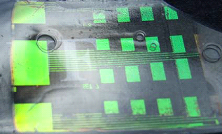
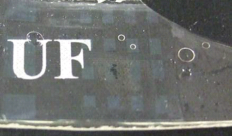
Figure 6. Working principle of macroporous polymer reflective color displays. (A) A macroporous polymer film exhibits shining green color. (B) When the air cavities of macroporous polymer is filled with ethanol, the color becomes red and the sample is transparent.
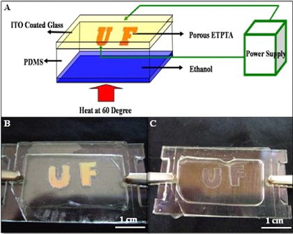
Figure 7. Protocol of an electrically driven reflective color display. (A) Schematic illustration of the experimental setup. (B) Power off. (C) Power on.
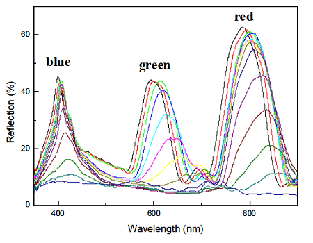
Figure 8. Multi-color displays are feasible by fabricating macroporous polymer films with stacked air cavities of different sizes.
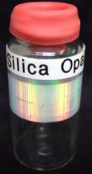
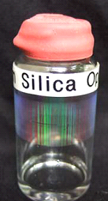
Figure 9. Proof-of-concept experiment demonstrates the feasibility of constructing reflective color displays on curved surface.
Objective 4: Determine PBG Properties of Shear-Aligned Photonic Crystals
This objective focuses on using optical characterization and theoretical calculations to determine the photonic band gaps of doctor blade coated colloidal photonic crystals. The spacing tunable close-packed structures of the resulting crystals, as shown in Figure 9, are favorable for opening wider photonic band gaps (PBG). These fundamental studies represent the first and the most critical step in fulfilling practical photonic crystals devices for all-optical integrated circuits.
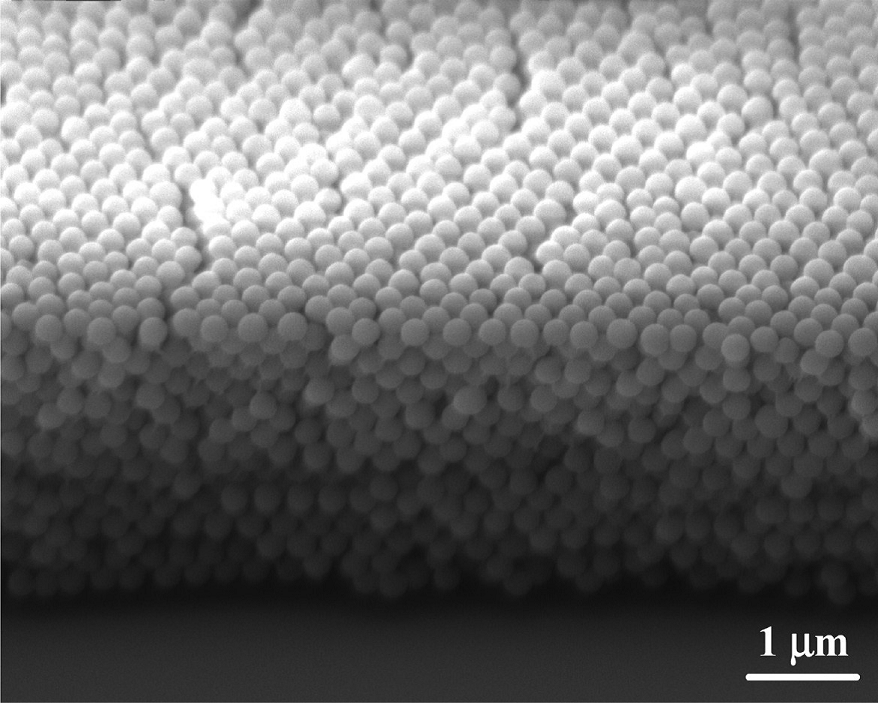
Figure 10. Cross-sectional SEM image of a silica colloidal crystal after removing the ETPTA matrix by 10 min of oxygen plasma etching.
The photonic band gaps of shear-aligned silica colloidal crystals and their inverted silicon replica are going to be evaluated using UV-Vis-near-IR spectroscopy and theoretical calculations. To make inverted high refractive index silicon replica for opening full PBGs, a BTI low-pressure chemical vapor deposition furnace will be used to deposit polycrystalline silicon in interstitials of colloidal crystals, followed by a brief hydrofluoric acid wash to remove silica templates. Transmission and reflectivity spectra will be obtained using an Ocean Optics HR4000+NIR256-2.1 High Resolution Fiber Optic UV-Vis-near-IR spectrometer, which can scan wavelength from 200-2100 nm. A scalar wave approximation calculation will predict the PBG properties of close-packed colloidal crystals for comparison with experimental results. To calculate photonic band gaps of inverted silicon photonic crystals, the free MIT Photonic-Bands package will be utilized, using the crystalline structural parameters obtained from above LSCM and light diffraction studies.
To achieve practical photonic crystal devices, such as low-threshold lasers, the controlled doping of point defects in shear-aligned colloidal crystals will be developed. Preliminary results show that precise positioning of single particles on colloidal crystals can be achieved using the template directed assembly technique. For better control over the doping process, the effect of perturbations caused by defective spheres on the subsequent shear-induced crystallization will be studied. LSCM will be used to examine the the vicinities of larger spheres. The photonic band gap properties of colloidal photonic crystals with embedded point defects and their inverted silicon replica will be studied using optical spectroscopy and theoretical calculations as described above to evaluate the quality of embedded microcavities.
Objective 5: Macroporous Photonic Crystal-Based Vapor Detectors
Mesoporous membranes, such as 2-D porous silicon and 1-D titania photonic crystals, have been widely used in sensitive vapor detection. By monitoring the change of the optical properties (e.g., wavelength shift of the photonic band gaps or the Fabry–Perot fringes) of the diffractive media during vapor condensation, the concentration of the vapors can be deduced. Blue-colored Morpho butterfly wing scales, which are intrinsic 3-D photonic crystals exhibiting unique optical diffraction and interference, have also been demonstrated for highly selective vapor detection. However, the limited size and material selection of these natural photonic crystals impede the development of reproducible and reusable vapor detectors.
I report the achievement of rapid and reversible vapor detection by using 3-D macroporous photonic crystals created by a doctor blade coating technology. Capillary condensation of a condensable vapor in the interconnected macropores with ~74% porosity leads to the increase of the effective refractive index of the diffractive medium, resulting in the red shift of the optical stop bands. The wavelength shift is linearly proportional to the vapor partial pressure for a spectrum of vapors. Optical simulation and theoretical prediction based on Kelvin equation suggest that a liquid film is formed on the walls of the macropores during vapor condensation.
It shows that macroporous photonic crystal-enabled vapor detectors can sense vapors at both high and low concentrations. The flexible macroporous polymer membranes, which can be scalably and economically produced over large areas by the doctor blade coating technology, could be applicable as low-cost, portable colorimetric vapor sensors (e.g., humidity sensors) at relatively high concentrations. To increase the sensitivity of the template macroporous vapor detectors at low concentration, the full spectrum analysis technique, which considers both the shift of the optical stop bands and the change of the spectral amplitude, can be applied. To enhance the selectivity for mixtures of vapors, the polymer surface can be selectively modified or hierarchical structures can be explored.
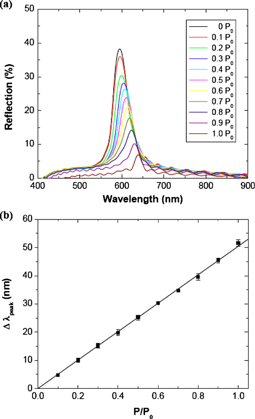
Figure 11. (Color online) (A) Normal-incidence specular reflection spectra obtained from a macroporous polymer film consisting of 320 nm air cavities exposed to ethanol vapors with different partial pressures. (B) Dependence of the shift of the Bragg diffraction peak vs ethanol partial pressure.
Objective 6: Develop Self-Adjusting Smart Windows
Smart windows are used in building and automotive applications in order to control the incident daylight and glare, according to occupant comfort. The control of sun light can be achieved by electrically switchable chromogenic materials, which are able to electrically change either their color or transmittance. They are, respectively, based on electrochromic systems, which change their color as a consequence of oxidation-reduction reactions, and liquid crystal systems that allow controlling their transmittance by the electrical-driven director reorientation. However, the devices require continuous power resulting in a power consumption of 5 up to 20 W/m2, while also long-term UV stability and high cost remain issues.
The self-standing doctor blade coated macroporous polymer films exhibit brilliant colors which originate from the Bragg diffractive of visible light from the three-dimensional highly ordered air cavities. The colors can be easily changed by tuning the size of the air. Figure 12 shows the methodology for self-adjusting smart windows. When the temperature is higher outside of the glazed buildings, ethanol is evaporated by in-situ heating, resulting in the macroporous polymer films exhibit brilliant greenish color. Certain range wavelength of solar radiation can be reflected, the solar radiation penetrate through the film is then reduced. When the temperature is lower outside of the glazed buildings, the air cavities are filled with a solvent which has the same refractive index as that of the polymer, the macroporous polymer films becomes completely transparent due to the index matching. All of the solar radiation can then penetrate through the sample. Therefore, the building's energy consumption can be reduced. This process is highly reversible and reproducible for thousands of cycles. The blocked solar radiation wavelength range also can be adjusted by introducing different size of silica particles in the doctor blade coating process. A proof-of-concept experiment is already made to demonstrate the potential use for smart window applications.
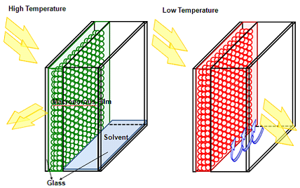
Figure 12. Schematic illustration of the methodology for self-adjusting smart windows.
Objective 7: Prepare Anti-Fog Coatings by Introducing Macroporous Polymers
Recent studies have explored various techniques to improve optical devices. Fog formation on surfaces is a definite concern, as fog reduces the effectiveness of light transmission and therefore optical efficiency. This hindrance is particularly disabling for such optical materials as eyeglasses, goggles, face shields, binoculars, not to mention analytical and medical instruments. As this fog occurs when water vapor condenses onto surfaces to form discrete and dispersed light-diffusing water droplets, the approach used most often for fog prevention is to increase the surface energy. Indeed, water condensation in contact with hydrophilic materials produces a continuous, transparent film.
Over the last three decades, one common method to obtain hydrophilic surface properties has been thin film deposition using polymers or monomers containing hydrophilic functionalities, such as hydroxyl (OH) or carboxyl groups (COOH, COOR). However, because these anti-fog coatings are highly hydrophilic, they are also soluble in water. In order to maintain long-term anti-fog properties and enhance coating stability, reticulation agents are often used, resulting in a crosslinked polymeric network. Unfortunately, while these coatings are well-crosslinked, their weak adhesion to the substrate causes problems.
Here I disclose a new methodology in creating anti-fog coatings by using doctor blade coated hydrophilic macroporous polymers, with same refractive index as water, which can be created by introducing Polyethylene Glycol Diacrylate (PEGDA). The template hydrophilic macroporous films can be wetted easily, and water can be trapped in the macroporous films. Figure 13 shows the methodology for anti-fog coatings. When the macroporous films are wetted, the air cavities are filled with water which has the same refractive index as that of the polymer, the macroporous polymer films becomes completely transparent due to the index matching. All of the solar radiation can then penetrate through the sample. This process is highly reversible and reproducible for thousands of cycles. A proof-of-concept experiment is already made to demonstrate the potential use for anti-fog coatings. This technology may be used on transparent glass or plastic surfaces used in optical applications, such as the lenses and mirrors found in glasses, goggles, camera lenses, and binoculars.
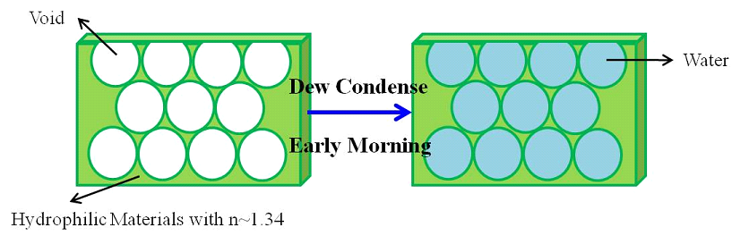
Figure 13. Schematic illustration of the methodology for anti-fog coatings.
Objective 8: Investigate the SP Properties of Templated Plasmonic Nanostructures
This objective focuses on conducting simultaneous experimental and theoretical investigations on the surface plasmonic properties of templated periodic metal nanostructures, including enhanced transmission through metallic nanohole arrays and surface-enhanced Raman scattering on nanovoid gratings. Resembling the formation of photonic band gaps in dielectric photonic crystals, scattering from structured metal surfaces can lead to the formation of surface plasmon standing waves and the opening of a surface plasmon band gap. Therefore, the periodic plasmonic nanostructures are intrinsic two-dimensional photonic crystals. Contrary to passive dielectric photonic crystals, the metals in the plasmonic gratings play an active role through the surface plasmons. The integration of these two types of phenomena might lead to new optical features and devices.
The goal of this task is to develop reproducible SERS substrates and to improve fundamental understanding of SERS at structured surfaces. Similar to the distribution of photonic states in dielectric photonic crystals, the density of SP modes is zero at frequencies within a SP band gap. However, at the band edges, the SP mode dispersion is flat and the associated density of SP modes is high, corresponding to a high field enhancement close to the metal surface. Further, the nature of this flat band means that such modes can be excited by light that is incident over a wide range of angles, making metal surface gratings good candidates for SERS substrates. SERS of adsorbed benzenethiol molecules on template metallic surface gratings will be systematically investigated. Benzenethiol is used as a model molecule because it has excellent affinity to coinage metals and has large Raman scattering crosssection. Preliminary results (Figure 14) show that the templated gold grating exhibits very significant SERS enhancement with a calculated enhancement factor (EF) of 5.4 × 107. In control experiments, no SERS spectra are observed on flat evaporated gold substrates. The coating-enabled nanovoid gratings have a number of advantages over those made by the templated electrodeposition technique, including two orders of magnitude larger area and higher crystalline quality.
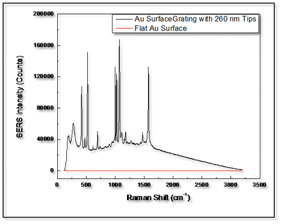
Figure 14. SER spectra of benzenethiol on an Au grating and a flat Au control sample.
Objective 9: Elucidate Formation Mechanisms of Close-Packed Colloidal Crystals
The objective is to conduct fundamental investigations to elucidate basic mechanisms by which close-packed colloidal crystals form during doctor blade coating process. The crystallization during coating process is possibly influenced by a combination of electrostatic interactions between silica spherical particles, rheological properties of the suspending fluid, confinement of the suspension, gravitational forces, and shear flow. The preliminary testing indicates that the suspending medium used during the shear-induced coating process is Newtonian over four decades of shear rate (Figure 15). The interactions between the confining surfaces and particulate phase cannot be dismissed outright. Evidence suggests that crystallization can be induced through heterogeneous nucleation in the presence of a confining boundary. The effect of different parameters, such as particle volume fraction, shear rate, coating mixture concentrations, space between blade and substrate, and final photopolymerization on the resulting crystalline structures will be investigated to provide fundamental knowledge.
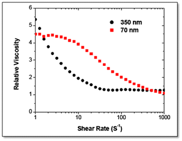
Figure 15. Shear thinning behavior of the suspension system using spheres at a volume fraction of 0.2.
Previous results show that the typical single-crystal domain size of doctor blade coated three-dimensional colloidal crystals is several millimeters. Colloidal crystals with a thickness ranging from ~5 to ~40 particle layers can be created. However, 2-D monolayer colloidal crystal have not achieved by this coating process. This impedes the applications of nanostructured materials templated from 2-D crystals, as long-range single-crystalline structures are desired for potential applications. I propose to use LSCM and an ARES LS-1 rheometer to elucidate the deterioration mechanisms. By controlling the gap distance in the rheometer, the difference in rheology as a function of the number of particle layers in the suspensions will be investigated.
It is also important to examine the minimal particle size that still allows the construction of 3-D ordered colloidal crystals using doctor blade coating technology. It is well known that Brownian forces play an important role in the microstructure formation for sheared colloidal suspensions, especially for small colloidal particles. Uniform silica nanoparticles will be synthesized using the microemulsion technique. A TEM will be utilized to characterize the spatial arrangement of nanoparticles. Rheological measurement and Brownian dynamics simulations are going to be conducted to understand the role of Brownian forces in the shear-aligned crystallization. Such fundamental studies are of both scientific and technological importance as the formation of large-area, 3-D ordered nanoparticle arrays is critical in the development of ultra-high-density optical and magnetic recording media.